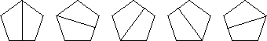
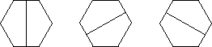
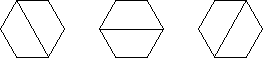

| 1. If the number of sides is odd, there is a reflection across the perpendicular bisector of each side, so n reflections. |
|  |
| If the number of sides is even, the perpendicular bisector of each side is also the
perpendicular bisector of the opposite side, so there are only |
|  |
| But there are also reflections across the bisectors of each vertex.
The bisector of each vertex also bisects the opposite vertex, so these account
for |
|  |
| (If n is odd, the perpendicular bisector of each side also bisects the opposite vertex.) |
Return to Symmetries of Regular Polygons Exercises.